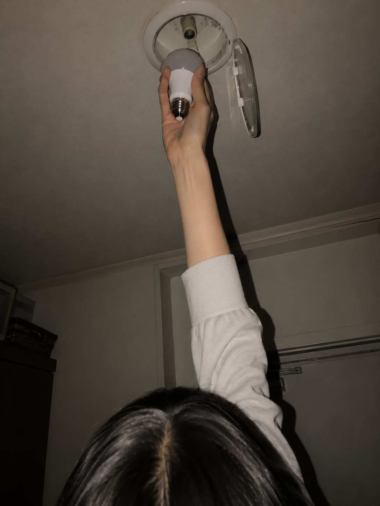

三人のトーク 最終更新 今日
瑠奈の日 これ見て
片代
どこで？
駅前のコンビニ
沙耶
のど飴の手でグミ持ってる
そう、そこでずれた
片代
広告が先に押したね
三人のトークと、わたしたちのメモ。
カフェで話したこと、帰り道に笑ったこと、あとから少し思い出したこと。 三人で過ごした日を、少しずつここに残しています。
これ見て
どこで？
駅前のコンビニ
のど飴の手でグミ持ってる
そう、そこでずれた
広告が先に押したね
今日のひとこと
Xのど飴を買いに入ったのに、変な広告見てグミを手に取ってた。
広告の勝ち方が雑。
2026-06-30 / 変な広告
ノートの置き場
なんでもない日を、少しだけ書き足して

三人で過ごした日のことを、少し長めに書いています。
書いている三人
瑠奈より
沙耶は、ちゃんとしようとして少し背筋が伸びる人。でも安心すると、いちばん柔らかく笑う。褒めるとすぐ照れるから、そこはもう少し慣れてほしい。
沙耶より
片代は、気づく前に気づいてくれる人。みんなが楽にいられるように、いつも少しだけ先に動いている。でも自分のことになると急に迷うから、そこは少し可愛い。
片代より
瑠奈は、面白そうと思ったら先に足が動く人。失敗しても、なぜか最後には笑い話にしてしまう。気づいたら周りまで巻き込まれていて、でも大事なことは雑にしない。
週に一度くらい、少し長めのメモは note 外部 に置いています。
この場所
ここは、三人で出かけたこと、カフェで話したこと、あとから少し笑ったことを置いておく場所です。 何も起きなかった日も、あとで見返すと意外と残っているものがあります。